Il simulatore del punteggio dei bandi cinema: dalla scelta del bando al dossier pronto per l’invio, fino al rendiconto dopo la concessione.
Versione {{VERSIONE}} · {{DATA}}
Ideazione, direzione del progetto e sviluppo: Davide Tipaldi · davidetipaldi.it
Uso interno e per i produttori che presentano domanda ai bandi pubblici per il cinema e l’audiovisivo.
Indice
1Che cos’è Clockwise
2Installazione e avvio
3Collegare Claude
4Primo avvio e scelta del bando
5Il dossier e il cruscotto
6Passo 1 — Documenti
7Passo 2 — Dati chiave
8Passo 3 — Valutazione
9Passo 4 — Report
10Produzione
11Finanza
12Gestione bando
13Legale
14Il catalogo dei bandi
15Aggiornamenti automatici
16Dati e riservatezza
17Limiti da conoscere
18Problemi comuni
19Per chi gestisce il programma
AElenco dei bandi
Come leggere questo manuale. I capitoli 2-9 seguono l’ordine in cui si lavora a una candidatura: installare, collegare Claude, scegliere il bando, caricare i documenti, controllare i numeri, far valutare il dossier, leggere il report. I capitoli 10-13 descrivono gli strumenti di lavoro; i capitoli 14-19 il catalogo dei bandi, la riservatezza, i limiti e la manutenzione.
Capitolo 1
Che cos’è Clockwise
Clockwise legge il dossier di candidatura a un bando pubblico per il cinema e l’audiovisivo e stima il punteggio che la Commissione gli darebbe, criterio per criterio e prima dell’invio. È un controllo qualità: mostra dove si perdono punti, che cosa manca per essere ammessi e che cosa conviene sistemare, con il guadagno atteso di ogni intervento.
Attorno alla stima ci sono gli strumenti per tutta la vita del progetto:
Produzione: spoglio della sceneggiatura, piano di lavorazione, ordine del giorno, storyboard, preventivo, adempimenti;
Finanza: piano finanziario, limite degli aiuti pubblici, tax credit, piano di cassa, recupero dei ricavi;
Gestione bando: scadenze dopo la concessione, quote di erogazione, registro delle spese, rendiconto;
Legale: domande sul bando con gli articoli citati, analisi dei contratti, bozze di documenti.
Come nasce il punteggio
Criteri numerici
Giorni di lavorazione sul territorio, professionisti locali, spesa, copertura finanziaria: li calcola il programma applicando le fasce scritte nel bando. Stessi numeri, stesso risultato, senza intelligenza artificiale.
Criteri di giudizio
Qualità della sceneggiatura, curriculum, piano finanziario e distributivo: li valuta Claude nel ruolo di più commissari con profili diversi (sceneggiatura, produzione, territorio, presidente, distribuzione). Il punteggio è la media, come nella Commissione vera.
Due letture
Per ogni criterio di giudizio c’è il punteggio atteso (quello che la Commissione darebbe secondo il metro dei punteggi reali) e la lettura rigorosa (solo ciò che è provato da documenti firmati). La differenza è il rischio documentale.
Motore di ragionamento
Regole ricavate dalla prova su un dossier reale fissano per ogni criterio una fascia attesa e una rigorosa; dopo la valutazione il report segnala dove i commissari simulati escono dalla fascia.
Soglie
Quelle del bando scelto: punteggio complessivo minimo, minimi di sezione, minimi su gruppi di criteri, penalità.
È una stima. Aiuta a trovare i punti deboli del dossier; non anticipa né vincola il giudizio della Commissione e non sostituisce il parere di un consulente.
Capitolo 2
Installazione e avvio
Su Windows (consigliato)
Scarica l’installatore Clockwise-Setup-<versione>.exe (per esempio Clockwise-Setup-{{VERSIONE}}.exe) dalla pagina dei rilasci del progetto su GitHub (sezione 19) oppure dal file ricevuto. Il numero nel nome è la versione: la versione installata si legge in Clockwise accanto al nome, in alto a sinistra.
Fai doppio clic. Se compare «PC protetto da Windows» premi Ulteriori informazioni e poi Esegui comunque: l’avviso compare finché il programma non è firmato con il certificato della società (sezione 19).
Premi Installa. Non servono i diritti di amministratore: il programma si installa per il tuo utente in %LOCALAPPDATA%\Programs\Clockwise e crea le icone nel menu Start e sul desktop.
Apri Clockwise dal menu Start o dal desktop. Si apre una piccola finestra nera (va lasciata aperta: è il motore del programma) e subito dopo Clockwise nel browser predefinito.
Chiudere
Pulsante Esci nella barra in alto, oppure chiudendo la finestra nera.
Aggiornare
Installa la nuova versione sopra la vecchia: i dossier restano.
Disinstallare
Impostazioni di Windows → App → App installate → Clockwise → Disinstalla.
Senza installazione
Clockwise.exe funziona anche da solo, con un doppio clic.
Nell’app Claude
La stessa interfaccia è pubblicata come pagina nell’app Claude: si apre dal link ricevuto e usa l’account Claude di chi la apre, senza installare nulla. Nell’app ogni lettura è limitata a circa 250.000 caratteri (le sceneggiature lunghe vengono lette in più parti) e la lettura delle scansioni dipende dal permesso di inviare immagini.
Da sorgente (per sviluppatori)
Serve Node.js 20 o successivo: npm install e poi npm start, quindi si apre http://localhost:5757.
Capitolo 3
Collegare Claude
I documenti li legge Claude. Lo stato del collegamento è sempre visibile nella pillola in alto a destra (punto verde = collegato). Toccala, o apri Collegamento, per scegliere come collegarti.
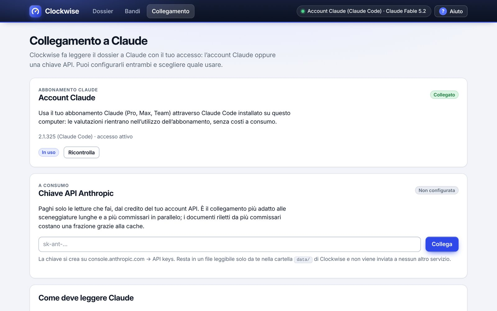
La pagina Collegamento: account Claude, chiave API e impostazioni di lettura.
Account Claude
Usa l’abbonamento Claude (Pro, Max, Team) attraverso Claude Code, il programma ufficiale di Anthropic. È il collegamento consigliato e si fa in tre passi dalla pagina, senza aprire il terminale:
Installa Claude Code: un clic, Clockwise scarica e installa il programma ufficiale (uno o due minuti).
Accedi: si apre la pagina di accesso di Claude nel browser; su Windows anche una finestra «Accesso a Claude», dove incollare il codice se il browser ne mostra uno.
Clockwise si accorge da solo dell’accesso e usa il collegamento.
Clockwise trova Claude Code anche se è stato installato dopo l’avvio del computer e non è nel PATH.
Chiave API Anthropic
Si incolla la chiave (inizia con sk-ant-): viene verificata e salvata sul computer, leggibile solo dal tuo utente. Le letture sono a consumo sul conto API.
Come deve leggere Claude
Modello (il più capace per la stima da usare prima dell’invio; uno più rapido per le prove), livello di approfondimento e numero di commissari (uno per una prova veloce, tre per la stima da usare, cinque per la massima solidità).
Prova il collegamento
Nella pagina Collegamento, Prova il collegamento → Prova adesso manda a Claude una richiesta reale di una riga con il collegamento e il modello scelti. Se risponde («Funziona: … ha risposto in pochi secondi») le valutazioni funzioneranno su questo computer. Se il modello scelto non è incluso nel tuo abbonamento, Clockwise ripiega da solo sul modello successivo e lo dice; lo stesso succede durante le valutazioni, e il report indica il modello usato.
Se il collegamento non funziona
In fondo alla pagina Collegamento c’è Diagnosi del collegamento → Esegui la diagnosi. Controlla sul computer dove è installato Claude Code e se risponde, se l’accesso è fatto, se una richiesta reale a Claude riesce, se la rete raggiunge Anthropic e quale PATH vede Clockwise, e dice che cosa fare. Con Copia il rapporto lo si manda a chi assiste: non contiene chiavi né documenti e la cartella dell’utente è anonimizzata.
I criteri che dipendono dai numeri (giorni, professionisti, spesa, copertura) si calcolano anche senza Claude: il cruscotto mostra comunque una stima statistica e una stima dalle regole.
Capitolo 4
Primo avvio e scelta del bando
Al primo avvio una breve guida a comparsa mostra dove sono le cose e propone di scegliere il bando con cui lavorerai di solito. La guida si può saltare e rivedere quando vuoi da Aiuto → Rivedi la guida iniziale. La prima volta che apri ogni scheda compare anche un suggerimento con Ho capito.
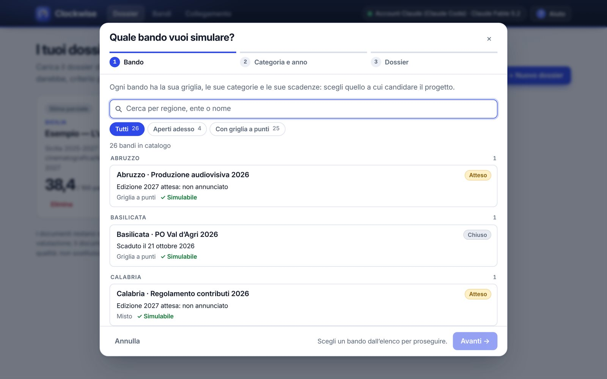
«Quale bando vuoi simulare?»: elenco dei bandi per regione, con stato, scadenza e tipo di valutazione.
Creare un dossier
Nell’elenco I tuoi dossier premi + Nuovo dossier.
Bando: cerca per regione o per nome, filtra «Aperti adesso» o «Con griglia a punti». Ogni voce dice se il bando è aperto, quando scade o quando è attesa la prossima edizione, e se è Simulabile. Le schede «Solo scheda informativa» non hanno una griglia a punti verificata: il programma spiega perché e quali alternative ci sono.
Categoria e anno: per ogni categoria vedi contributo massimo (percentuale e tetto), dotazione e punteggi minimi. L’anno si sceglie tra le finestre note e l’edizione successiva attesa, marcata «prevista»: in quel caso vale la griglia dell’ultima edizione finché non esce il nuovo avviso.
Dossier: dai un nome e conferma. Con «Usa questo bando per i prossimi dossier» il bando diventa quello proposto di solito.
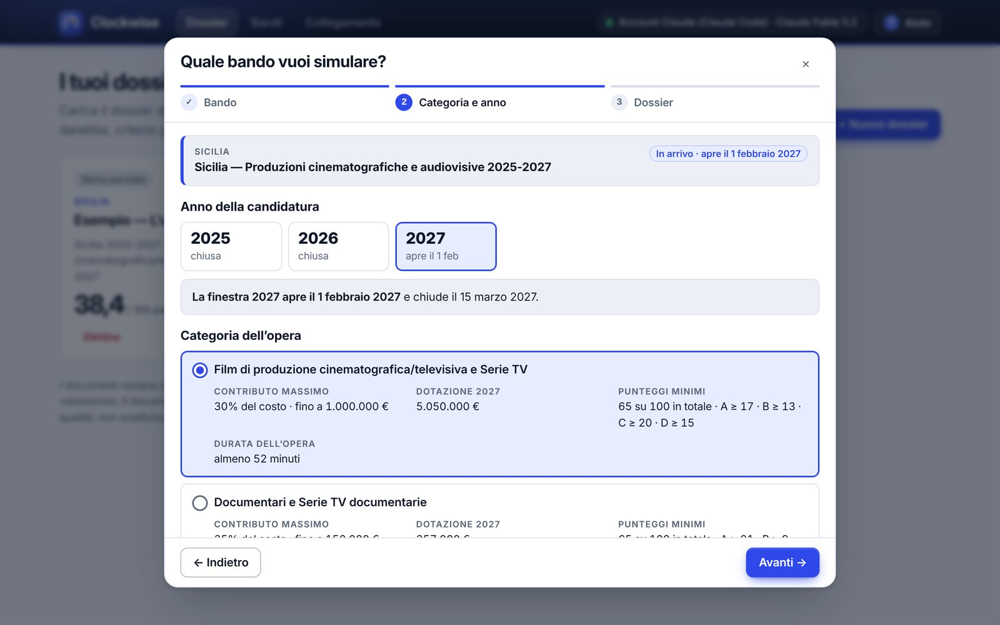
Secondo passo: categoria dell’opera e anno della finestra.
Bando, categoria e finestra si possono cambiare in ogni momento dall’intestazione del dossier; se il dossier ha già una valutazione, il programma chiede conferma perché la valutazione va rifatta sul nuovo bando.
Dossier d’esempio. Nell’elenco c’è «Esempio — L’ultima tonnara», con numeri d’invenzione: serve a vedere subito come lavora il simulatore. Si può modificare o eliminare.
Capitolo 5
Il dossier e il cruscotto
Ogni candidatura ha il suo dossier, salvato sul tuo dispositivo. In alto ci sono bando, categoria e finestra; sotto le schede: Cruscotto, i quattro passi numerati (Documenti, Dati chiave, Valutazione, Report) e gli strumenti (Produzione, Finanza, Gestione bando, Legale).
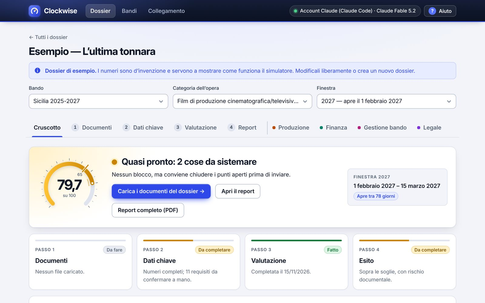
Il cruscotto: semaforo, punteggio stimato, finestra del bando e i quattro passi.
Semaforo
Rosso: almeno un problema rende l’istanza irricevibile o sotto soglia. Giallo: nessun blocco, ma restano cose da sistemare. Verde: pronto per l’invio.
Prossimo passo
Il pulsante principale porta all’azione più utile in quel momento.
Da sistemare
Problemi in ordine di gravità, ognuno con il pulsante che porta al punto in cui correggerlo.
Previsione
Prima della lettura di Claude il dossier viene completato con i punteggi che la Commissione ha dato davvero ai progetti delle ultime finestre (dove le graduatorie sono pubbliche): scenari prudente, atteso e favorevole, e in quanti casi reali il dossier sarebbe ammissibile.
Stima dalle regole
La previsione del motore di ragionamento, calcolata senza Claude dai fatti del dossier.
Dove conviene presentare
Lo stesso progetto confrontato sugli altri bandi: contributo ottenibile, punti dai numeri, profilo di ciascun bando e pulsante per creare un dossier gemello.
Invio
PEC o piattaforma, oggetto del messaggio da copiare, regole di invio ed elenco dei file da allegare.
Capitolo 6
Passo 1 — Documenti
Trascina nel riquadro tutti i file della candidatura insieme: moduli di domanda, sceneggiatura o trattamento, curriculum, contratti, deal memo, lettere di intento, piano finanziario. Formati: PDF, DOCX, XLS/XLSX, TXT, immagini.
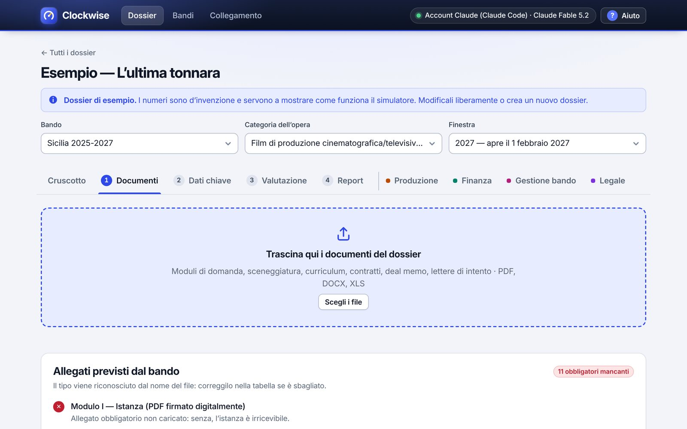
La scheda Documenti con l’elenco degli allegati previsti dal bando.
Tipo di documento: viene riconosciuto dal nome del file; se è sbagliato lo correggi nella tabella. Il tipo decide quali criteri lo leggono.
Allegati previsti dal bando: l’elenco segna in rosso gli obbligatori mancanti (senza, l’istanza è irricevibile) e in giallo quelli che portano punti.
Modulo III della Sicilia (.xls): compila da solo i Dati chiave. Per gli altri bandi i dati si inseriscono a mano o si fanno estrarre da Claude.
Scansioni: i PDF senza testo e le fotografie vengono letti da Claude come immagini con il pulsante Leggi le scansioni con Claude, segnalando firme e timbri. La trascrizione va controllata sull’originale per importi, date e firme. Dopo aver riaperto la pagina, per leggere una scansione serve trascinare di nuovo il file.
Documento d’identità: non viene mai letto né inviato a Claude.
Il vecchio formato Word .doc non è leggibile: salvalo in PDF o DOCX.
Capitolo 7
Passo 2 — Dati chiave
Qui stanno i numeri da cui dipendono i criteri calcolati e i controlli di ammissibilità. A destra vedi subito i punti che ne derivano e quanto vale salire di fascia.
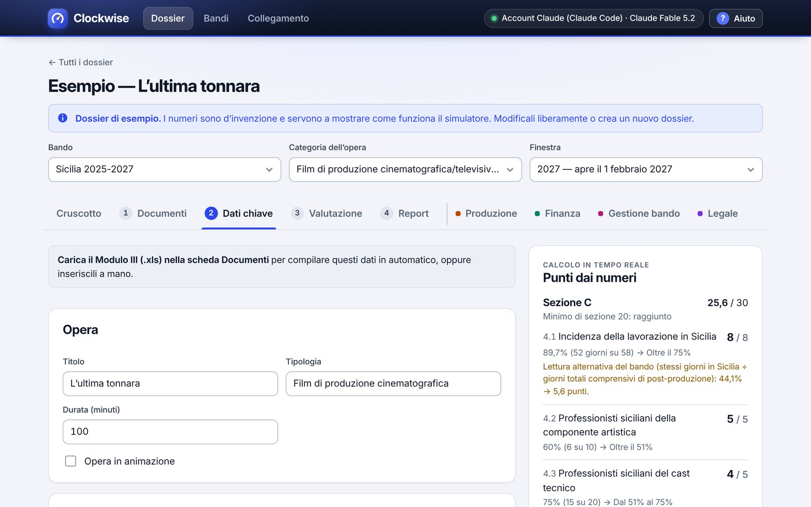
Dati chiave: a sinistra i numeri, a destra i punti calcolati in tempo reale.
Opera
Titolo, tipologia, durata, animazione.
Giorni
Pre-produzione, riprese e post-produzione: totali e svolti nel territorio del bando.
Professionisti
Componente artistica e cast tecnico: totali e nati o residenti nel territorio (figuranti e comparse esclusi).
Economici
Costo di produzione, costo ammissibile, contributo richiesto, spesa nel territorio, producer fee.
Piano finanziario
Una riga per fonte, con il documento che la sostiene (contratto, deal memo, delibera, referenze bancarie, nessuno). La copertura documentata si calcola sul costo al netto del contributo richiesto.
Requisiti
I requisiti che il programma non può dedurre dai numeri (iscrizioni, regolarità, ATECO…) si spuntano a mano.
Se mancano i moduli in Excel, Compila con Claude dai documenti caricati li ricava dai documenti caricati: controlla sempre il risultato. Puoi cambiare un numero per vedere quanto vale salire di fascia: i file originali non vengono toccati.
Capitolo 8
Passo 3 — Valutazione
Claude legge i documenti come farebbero i commissari: una lettura per ogni sezione della griglia con criteri di giudizio, per ciascun commissario, più una verifica formale del dossier.
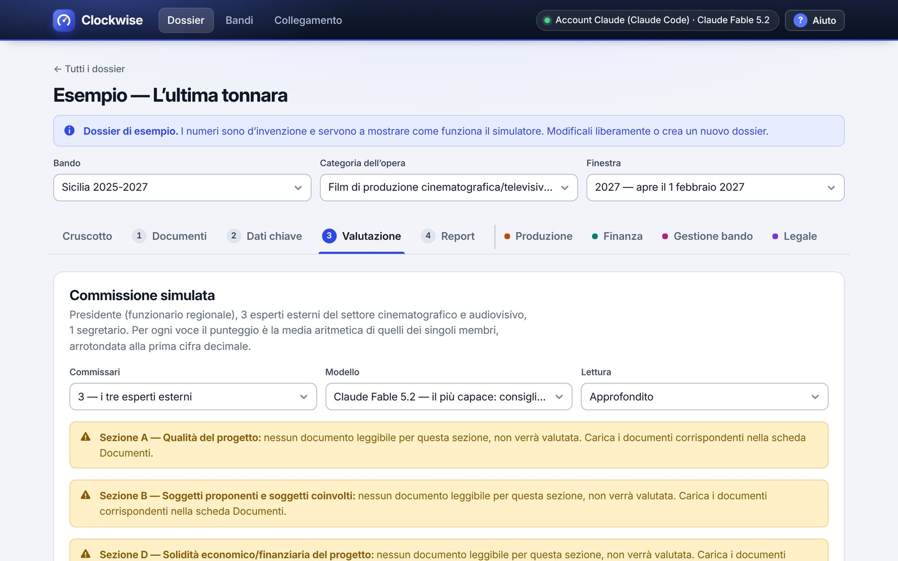
La scheda Valutazione: piano delle letture e avanzamento.
Scegli il numero di commissari: uno per una prova (costa una frazione), tre per la stima da usare prima dell’invio, cinque per la massima solidità.
Controlla il piano: se una sezione non ha documenti leggibili non viene valutata, e il programma dice quali caricare.
Premi Avvia la valutazione. Ogni passo mostra avanzamento e risultato; la valutazione può durare diversi minuti. Se un passo fallisce si può riprovare solo quello.
Le sceneggiature troppo lunghe per una sola lettura vengono lette in più parti e riassunte in una scheda di lettura con estratti, conservata per le valutazioni successive.
Capitolo 9
Passo 4 — Report
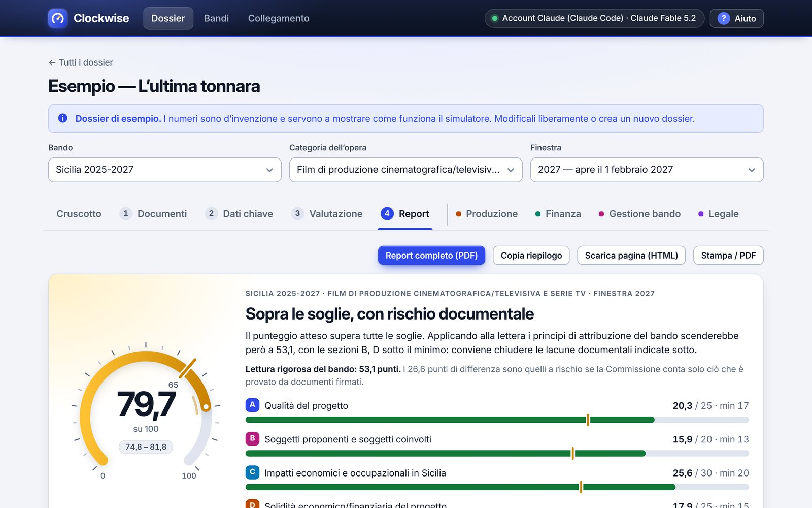
Il report: esito, quadrante del punteggio con la tacca della soglia, sezioni con i minimi.
Esito: «Sopra le soglie», «Sopra le soglie, con rischio documentale» (ammesso solo nella lettura attesa), «Sotto soglia», oppure stima parziale.
Punteggio con la forbice tra il commissario più severo e il più generoso, e la lettura rigorosa.
Sezioni e criteri: apri un criterio per leggere motivazioni, evidenze, criticità e miglioramenti di ogni commissario, con la fascia di taratura (dentro o fuori, e perché) e, dove il voto è stato corretto con i casi reali, la media dei commissari prima della correzione.
Interventi: azioni ordinate per punti recuperabili.
Ammissibilità: tetto del contributo, spesa minima sul territorio, quadratura tra budget e piano, producer fee, allegati, incoerenze tra i moduli.
Graduatoria: dove si sarebbe collocato il dossier tra i progetti reali e storico delle soglie di finanziamento (dove le graduatorie sono pubbliche).
Quanto potresti ottenere: per i bandi che riducono il contributo in proporzione al primo in graduatoria (es. Sicilia) la stima del contributo concedibile.
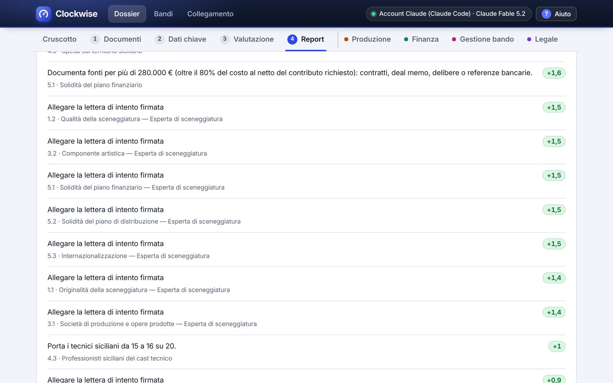
Sezioni e criteri: atteso, rigoroso e fascia di taratura.
Esportare
Report completo (PDF) crea un documento impaginato con tutti i dati interni: punteggi e motivazioni di ogni commissario, controlli, confronto con le graduatorie, dati chiave, piano finanziario, documenti, appendici di produzione e legale. Ci sono anche Copia riepilogo, Scarica pagina (HTML) e Stampa.
Prova con un dossier già presentato
In fondo al report si può inserire il punteggio reale ottenuto da un dossier già valutato: il programma mostra lo scarto sezione per sezione. Con Salva come caso di taratura il caso viene registrato: Claude lo legge nelle valutazioni successive dello stesso bando e il programma corregge le stime con una parte dello scarto osservato.
Come il programma impara dai punteggi reali
Il voto di ogni criterio a giudizio nasce in due passi, entrambi visibili nel report:
Regole: media pesata tra i commissari simulati, che leggono i documenti, e la fascia che il motore di regole ricava dai casi reali. Dove la regola ha un riscontro diretto in un caso reale pesa quanto i commissari, dove è un’estrapolazione pesa un quarto.
Casi: per ogni sezione si aggiunge una parte dello scarto medio osservato nei dossier di cui si conosce il punteggio vero (quelli incorporati nel programma e quelli salvati da te). Con un solo caso si applica metà dello scarto, con due i due terzi, e così via, con un tetto dell’8% della sezione.
I criteri calcolati dai numeri, quelli con una tabella di punteggi nel bando e la lettura rigorosa non vengono mai corretti. La correzione resta salvata con la valutazione: il punteggio di un dossier non cambia da solo quando arrivano casi nuovi, cambia alla valutazione successiva.
Capitolo 10
Produzione
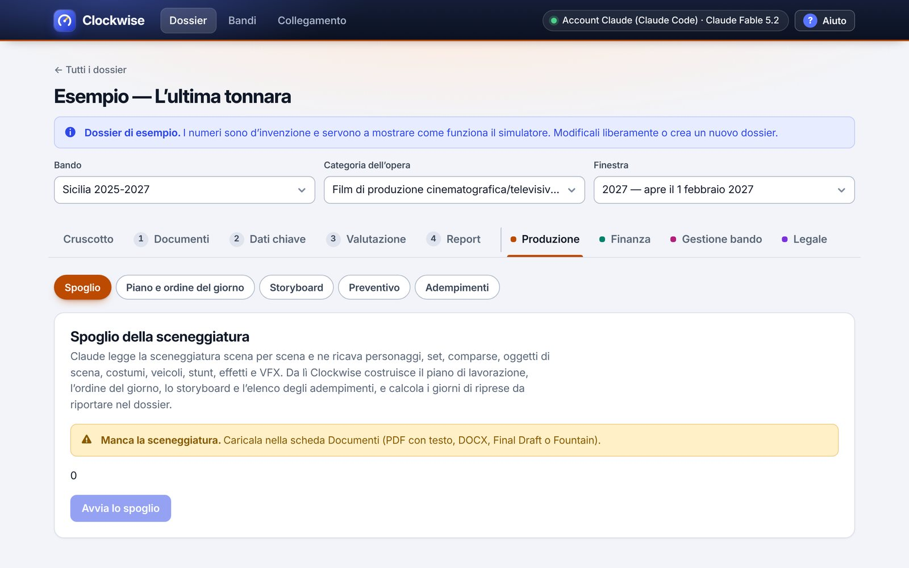
Produzione: si parte dallo spoglio della sceneggiatura.
Spoglio
Claude legge la sceneggiatura scena per scena: luogo, interno/esterno, giorno/notte, personaggi, comparse, elementi per reparto, rischi, effetti visivi. Esportazione CSV.
Piano e ordine del giorno
Piano di lavorazione proposto dalle scene, calendario delle riprese, ordine del giorno e stralci.
Storyboard
Inquadrature per scena con campo, angolazione, movimento, ottica, durata, bozzetto vettoriale e prompt per un generatore di immagini.
Preventivo
Voci di budget, importazione del Master Budget e minimi di riferimento; i totali alimentano i Dati chiave.
Adempimenti
Che cosa serve per girare in regola in Italia, fase per fase; le voci legate a minori, animali, armi, droni, acqua o luoghi pubblici compaiono solo se lo spoglio le ha trovate.
Piano di lavorazione e bozzetti sono strumenti di lavoro: non conoscono disponibilità degli attori, spostamenti e meteo, e non sostituiscono un disegnatore.
Capitolo 11
Finanza
In testa c’è il riquadro Il piano in un minuto: giudizio e numeri chiave, aggiornati a ogni modifica. Le fonti sono sempre quelle dei Dati chiave: qui si leggono e si confrontano, non si duplicano.
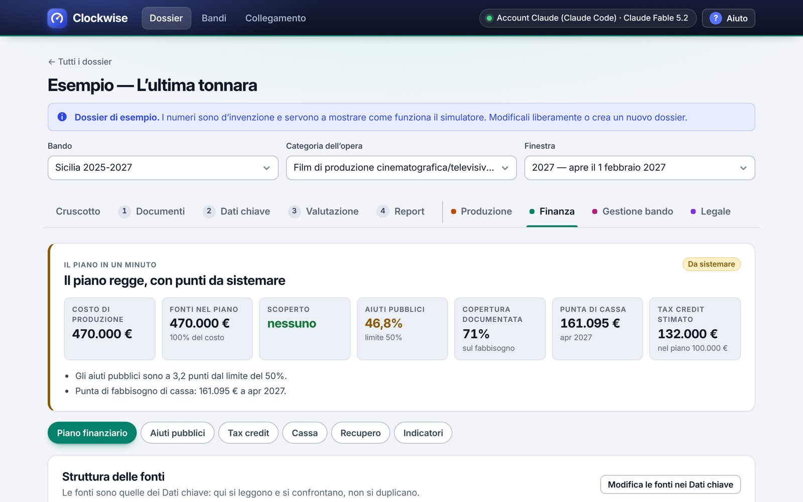
La scheda Finanza.
Piano finanziario
Struttura delle fonti, scoperto, copertura documentata; scenari alternativi salvabili e confrontabili, applicabili al dossier dopo conferma.
Aiuti pubblici
Intensità degli aiuti sul costo contro il limite applicabile (50%, 60% per le coproduzioni transfrontaliere, 80% per le opere difficili, Reg. UE 651/2014 art. 54), margine in euro, scelta riga per riga di che cosa conta come aiuto.
Tax credit
Calcolatore del credito d’imposta alla produzione secondo il D.I. 225/2024 come modificato nel 2025 e nel 2026: costo eleggibile, aliquota, tetti, quote di utilizzo; Porta nel piano lo inserisce come fonte.
Cassa
Piano di cassa mensile: uscite per fase, entrate per fonte con la loro tempistica, punta di fabbisogno, costo del finanziamento ponte; grafico, tabella ed esportazione CSV.
Recupero
Tre scenari di incasso per canale, cascata di recupero, punto di pareggio.
Indicatori
Costo al minuto e per giorno di ripresa, producer fee e spese generali contro i limiti del bando, quote pubblica e privata, ognuno con la formula.
Ogni numero normativo porta fonte e data. I costi di fideiussione, sconto del tax credit e finanziamento ponte e le percentuali del recupero sono stime indicative: sostituiscile con i valori reali. Per le decisioni fiscali conferma con il commercialista.
Capitolo 12
Gestione bando
Serve dopo la concessione: gli impegni che hanno generato il punteggio vengono verificati a consuntivo.
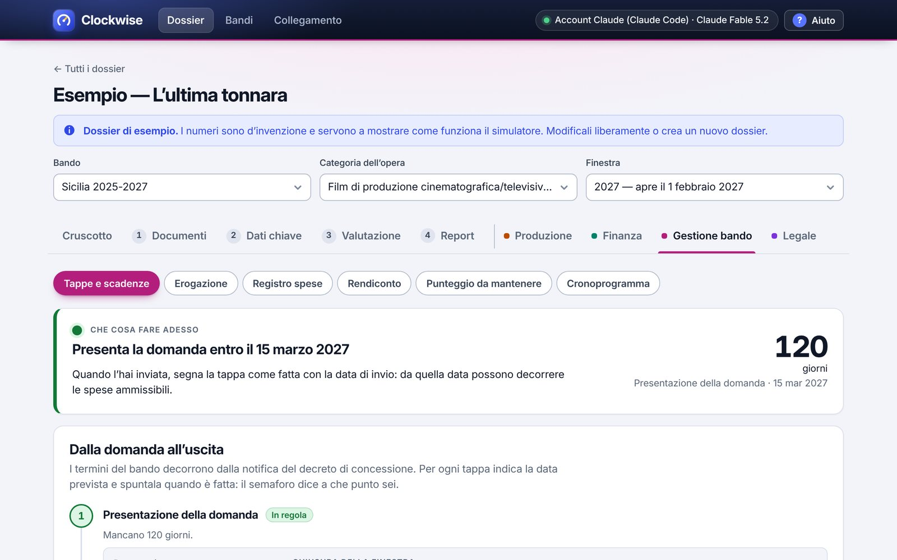
Gestione bando: tappe e scadenze con il prossimo passo da fare.
Tappe e scadenze
Dalla presentazione al saldo: concessione, accettazione, riprese, rendicontazione, uscita. Le scadenze del bando (mesi dalla concessione, preavvisi, proroghe) con conto alla rovescia e semaforo; la data di notifica del decreto si inserisce una volta sola.
Erogazione
Quote del bando calcolate sul contributo concesso, fideiussione e suo costo stimato, stato di ogni quota, incassato e residuo.
Registro spese
Data, fornitore, voce di budget, imponibile, IVA, nel territorio, ammissibile, pagamento tracciabile, documento. Inserimento rapido da tastiera, importazione da CSV o Excel (anche con numeri all’italiana), esportazione della matrice di rendicontazione.
Rendiconto
Consuntivo contro preventivo per voce, controlli del bando (spesa minima sul territorio, costo minimo a consuntivo, pagamenti non tracciabili, spese fuori periodo) e che cosa manca per chiedere il saldo.
Punteggio da mantenere
Giorni, professionisti e spesa dichiarati contro quelli effettivi, con il ricalcolo dei criteri e il rischio di riduzione o revoca.
Cronoprogramma
Diagramma delle fasi con le scadenze del bando, date modificabili, esportazione CSV.
Capitolo 13
Legale
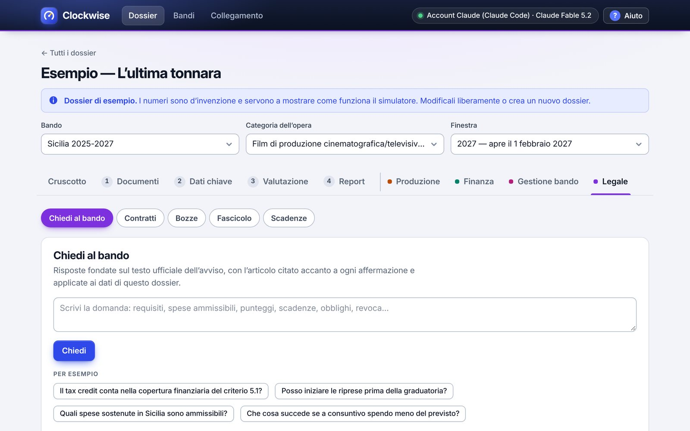
L’area legale: domande sul bando con gli articoli citati.
Chiedi al bando
Domande su requisiti, spese ammissibili, punteggi, scadenze, obblighi, revoca: ogni risposta cita l’articolo dell’avviso. Controlla sempre il testo indicato prima di decidere.
Contratti
Analisi di contratti e deal memo caricati: parti, importi, clausole, rischi e coerenza con il dossier.
Bozze
Bozze di documenti per la candidatura e la produzione (lettere di intento, accordi, dichiarazioni), da rivedere con un legale.
Fascicolo
Parti, impegni e date chiave ricavati dai documenti, con le incongruenze tra un documento e l’altro.
Scadenze
Termini che decorrono dalla notifica del decreto di concessione.
L’area legale lavora sul testo dell’avviso e sui documenti del dossier: è un supporto, non un parere legale, e non consulta banche dati di leggi e sentenze.
Capitolo 14
Il catalogo dei bandi
Clockwise contiene {{N_BANDI}} schede di bando: le regioni e le province autonome, i contributi selettivi del Ministero della Cultura e Creative Europe MEDIA. {{N_SIMULABILI}} hanno una griglia a punti trascritta dal testo ufficiale e ricontrollata da una verifica indipendente: su questi si simula il punteggio. Gli altri restano schede informative (bando senza punteggio, non ancora pubblicato o con griglia non provata).
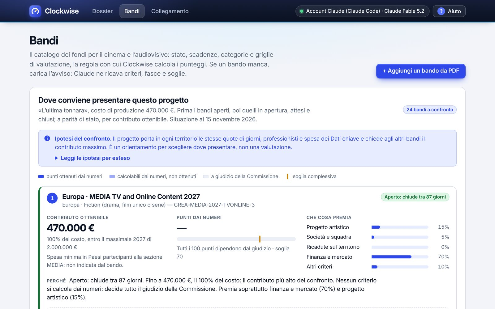
La pagina Bandi: catalogo per regione, aggiornamenti e dettaglio del bando.
Che cosa c’è nella scheda di un bando
stato e date: finestre di presentazione, edizioni passate e prossima edizione attesa;
categorie con contributo massimo, massimali, dotazione e punteggi minimi;
griglia di valutazione completa, con le regole particolari (soglia su alcune sezioni, minimi su gruppi di criteri, penalità);
fonti ufficiali con i link e «Come è stata verificata la griglia» (estratti del testo e dubbi rimasti);
per la Sicilia anche il testo integrale dell’avviso e i punteggi reali delle graduatorie 2025 e 2026, usati come metro della Commissione.
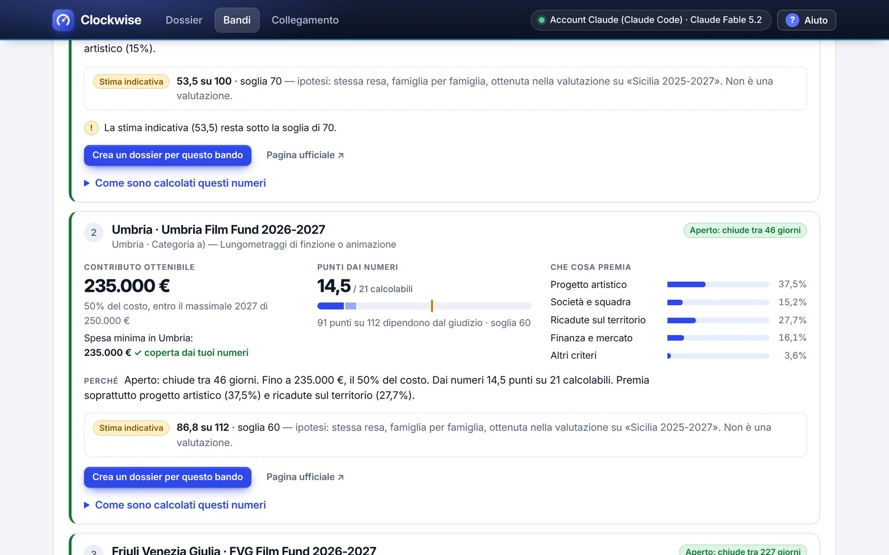
Dettaglio di un bando: numeri chiave, categorie, calendario delle edizioni.
Aggiungere un bando
+ Aggiungi un bando da PDF: Claude ricava criteri, fasce e soglie dall’avviso. La griglia resta segnata «da verificare» finché non la controlli sul testo; si può correggere anche a mano.
Conoscenza aggiuntiva
FAQ, verbali, schede di valutazione ricevute, decreti di modifica, graduatorie di altri anni: caricati nel dettaglio del bando, Claude li legge a ogni valutazione insieme alla conoscenza fissa.
Capitolo 15
Aggiornamenti automatici
Il controllo è silenzioso: vedi qualcosa solo quando c’è una novità.
Catalogo
Il programma scarica il catalogo pubblicato del progetto. Una scheda entra solo se integra (impronta corretta), valida e più recente di quella in uso; le altre finiscono nel registro con il motivo.
Pagine degli enti
Il programma controlla la pagina ufficiale di ogni bando e ne ricava l’elenco dei documenti pubblicati. Un documento mai visto (avviso, decreto, graduatoria, proroga, FAQ) diventa una «novità» nel dettaglio del bando, con il link.
Nuovi avvisi
Se l’opzione è attiva e Claude è collegato, un nuovo avviso in PDF di un bando che usi viene letto da Claude e diventa una proposta di griglia con il confronto. Non sostituisce mai la griglia verificata: si attiva solo a mano, come bando «da verificare».
Cadenza
All’avvio se sono passate 12 ore, poi ogni 6 ore a programma aperto. Nella pagina Bandi ci sono Controlla ora, le due opzioni e il registro degli eventi.
Il controllo delle pagine degli enti funziona solo con il programma installato (non nell’app Claude). Il catalogo pubblicato raggiunge i programmi installati solo se il repository GitHub del progetto è pubblico o se il catalogo è ospitato a un indirizzo accessibile.
Capitolo 16
Dati e riservatezza
I dossier restano sul tuo dispositivo, nel browser. Non vengono caricati su nessun server del programma. Il server locale ascolta solo su 127.0.0.1.
A Claude viene inviato solo il testo necessario a ciascuna lettura, attraverso il collegamento scelto e a nessun altro servizio.
Il documento d’identità non viene mai letto né inviato.
La chiave API è salvata sul computer, leggibile solo dal tuo utente.
Il controllo degli aggiornamenti non invia alcun dato dell’utente.
I dati stanno nel browser usato da Clockwise: cancellare i dati di navigazione di quel browser cancella anche i dossier. Prima di farlo, o prima di cambiare computer, scarica il report completo dei dossier importanti.
Capitolo 17
Limiti da conoscere
Taratura: il motore di ragionamento e l’apprendimento dai casi poggiano su una prova con un dossier reale (finanziato, lungometraggio, Sicilia) e sulle graduatorie pubbliche. Su quel dossier la stima è a meno di un punto dal punteggio vero, ma è lo stesso caso su cui il programma è stato tarato. Documentari, cortometraggi e gli altri bandi sono estrapolazioni ragionate: un secondo caso reale, meglio se escluso, serve a confermarla.
Altri bandi: le griglie sono verificate sul testo ufficiale, ma nessuno è ancora stato provato su un dossier reale: la stima vale soprattutto come controllo della struttura del dossier rispetto alla griglia.
Edizioni previste: per un anno non ancora pubblicato vale la griglia dell’ultima edizione; il nuovo avviso può cambiarla.
Scansioni: la trascrizione va controllata sull’originale per importi, date e firme.
Finanza: le stime di mercato (fideiussione, sconto, ponte, recupero) non hanno fonte ufficiale.
Adempimenti: elenco di orientamento aggiornato a novembre 2026; norme, importi e termini cambiano.
Capitolo 18
Problemi comuni
Che cosa succede
Che cosa fare
Windows mostra «PC protetto da Windows»
Ulteriori informazioni → Esegui comunque. Sparisce quando il programma è firmato con il certificato della società.
La pillola in alto dice «Claude non collegato»
Apri Collegamento e segui i tre passi: Installa Claude Code, Accedi, fatto. In alternativa inserisci una chiave API.
Claude Code è installato ma Clockwise non lo trova, o l’accesso non risulta
Collegamento → Esegui la diagnosi: il rapporto dice dove è stato cercato e che cosa risponde. Premi Copia il rapporto e mandalo a chi ti assiste.
L’installazione di Claude Code non riesce
Spesso è la rete aziendale (proxy, firewall): la diagnosi lo mostra nella sezione Rete. Si può installare a mano da PowerShell con irm https://claude.ai/install.ps1 | iex, poi claude auth login.
«La porta è già in uso»
Clockwise è probabilmente già aperto: cerca la finestra nera. Altrimenti il programma sceglie da solo la porta successiva.
Un file non viene letto
Se è un .doc salvalo in PDF o DOCX. Se è una scansione usa «Leggi le scansioni con Claude» (dopo aver riaperto la pagina va trascinato di nuovo).
Una sezione non viene valutata
Non ci sono documenti leggibili per i suoi criteri: carica quelli indicati nella scheda Valutazione, o correggi il tipo dei documenti.
Un passo della valutazione fallisce
Premi Riprova: vengono rifatti solo i passi mancanti.
Il bando che cerco non c’è o non è simulabile
Pagina Bandi → Aggiungi un bando da PDF, poi verifica la griglia sul testo.
I dossier sono spariti
Probabilmente sono stati cancellati i dati del browser. Per questo conviene scaricare il report completo dei dossier importanti.
Pagina dei rilasci del progetto: …/releases/latest porta sempre all’ultima versione. Ogni versione ha la sua release, v<versione>, con il numero nei nomi dei file: Clockwise-Setup-<versione>.exe, Clockwise-<versione>.exe, Manuale-Clockwise-<versione>.pdf.
Accesso
Finché il repository è privato, rilasci e download sono visibili solo agli utenti GitHub con accesso al progetto.
Comandi
Comando
A che serve
npm test
Test automatici: punteggi, bandi, finanza, gestione, taratura, coerenza con i documenti ufficiali.
npm run build:windows
Clockwise.exe e installatore in dist/windows.
npm run build:artifact
Pagina singola per l’app Claude (dist/clockwise.html).
npm run bandi
Rigenera il catalogo dalle schede in bandi/dati/.
npm run bandi:controlla
Controlla le pagine ufficiali degli enti.
Pubblicare una nuova versione
A ogni aggiornamento del codice GitHub costruisce e prova il pacchetto su un vero Windows (Actions → Windows): test, avvio, installazione e disinstallazione.
Per pubblicarlo: Actions → Windows → Run workflow, spunta pubblica. Installatore, programma e manuale vanno nella release della versione (v<versione>), con la versione nei nomi dei file, segnata come ultima.
Firma digitale
Con un certificato di firma del codice intestato alla società (rilasciato da un’autorità riconosciuta) Windows mostra l’editore e smette di bloccare l’installazione. Il pacchetto si firma da solo: basta inserire in GitHub → Settings → Secrets and variables → Actions i segreti WINDOWS_CERT_PFX_BASE64 e WINDOWS_CERT_PASSWORD. Per certificati su token USB o in cloud si usa CLOCKWISE_FIRMA_COMANDO (vedi scripts/windows/firma.mjs). Un certificato autofirmato vale solo sui computer dove viene installato a mano.
Aggiornare una scheda di bando
Si modifica il file in bandi/dati/ riportando solo numeri letti nel testo ufficiale, si aggiorna revisione, si esegue npm run bandi e npm test, poi si pubblica: il catalogo raggiunge da solo i programmi installati.
Appendice
Elenco dei bandi
Stato al {{DATA}}. «Simulabile» = griglia a punti trascritta dal testo ufficiale e verificata in modo indipendente. Le date e lo stato si aggiornano con il catalogo.